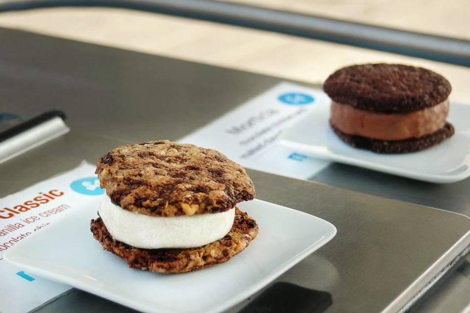
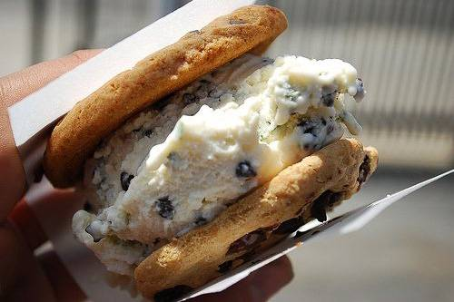
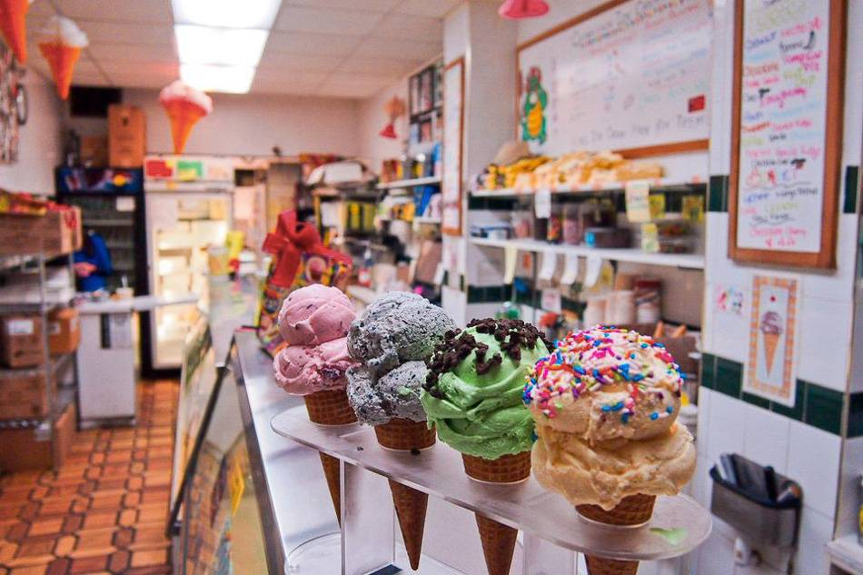

LAS 5 MEJORES HELADERIAS DE NEW YORK
1.-Melt Bakery

Melt Bakery está especializada en el llamado creamwich que combina helado con capas de galleta
En la parte baja, en el histórico Lower East Side, encontrará una panadería ecológica especializada en una única cosa: el creamwich (sándwich de helado). Para los principiantes, los creamwiches son un pastel de galleta con helado. Los copropietarios, Julian Plyter y Kareem Hamady inauguraron Melt Bakery en una feria en 2010 antes de abrir su tienda en Orchard Street dos años después. Normalmente, los creamwiches grandes cuestan 5 dólares y los pequeños 3 dólares. La tienda es un poco pequeña y sin asientos, así que piense en el establecimiento como un lugar de comida para llevar. El cartel se ve poco, así que preste atención cuando camine por las tiendas de esa parte de Orchard Street. Los panaderos de Melt utilizan ingredientes locales y sus productos dependen de la estación del año, en otras palabras, ¡siempre hay un nuevo sabor (como en junio de 2014, que hay 6) del que disfrutar! ¿Por qué no ir en primavera para probar el “Classic”? Es una combinación deliciosa de galletas de nuez y trocitos de chocolates con helado de vainilla, o si le gusta el red velvet cake, pruebe el “Lovelet”, galletas deliciosas con crema de queso.
Situado en el 123 de Orchard Street, la panadería abre todos los días de la semana, de domingos a jueves desde el mediodía hasta las 8 de la tarde y los viernes y sábados desde el mediodía hasta las 10 de la noche. Puede llegar fácilmente a Melt Bakery en metro: vaya a la estación Delancey-Essex Street, a unas manzanas, que cuenta con las líneas F y J. Y ya que está por ahí.
2.- Coolhaus

La forma de los creamwiches de Coolhaus está inspirada en la arquitectura y el diseño
¿Es un fanático del creamwich? Después de visitar Melt Bakery, pare en el camión de los helados Coolhaus. Los cocreadores, Natasha Case y Freya Estreller, lanzaron la marca en 2008, inspiradas en la conexión entre diseño arquitectónico y comida. La popularidad de los creamwiches dio paso a una flota de 11 camiones por todo el país (3 en Nueva York) y al reparto a pequeños comercios. Como son camiones móviles, están en varios lugares cada día, así que mire las actualizaciones de Twitter de Coolhaus. Los precios rondan los 6 dólares por pieza, pero se pueden pedir al gusto, es decir, los clientes pueden pedir combinaciones de galletas y helados. Coolhaus también apoya la ecología utilizando ingredientes orgánicos y caseros, y también cuenta con especialidades estacionales, como las del verano, con sabores cítricos, o las del otoño, con calabaza y sabores picantes, y sus productos básicos son tan tentadores como se podría esperar.
3) Chinatown Ice Cream Factory

Chinatown Ice Cream deleita a los clients con sus sabores únicos y su orgullo cultural
¿Está buscando un helado con sorpresa? Chinatown Ice Cream Factory, llevado por la familia Seid desde hace 30 años, combina el amor de América por los helados con un toque chino. Los sabores “normales” incluyen natillas de huevo chinas, té verde y piña. Los sabores “exóticos” incluyen chocolate, pistachio y rocky road (chocolate, nueces y malvaviscos). ¡No son sus clasificaciones normales! Chinatown Ice Cream siempre está creando nuevos sabores y sus tartas heladas son perfectas para fiestas o para llevar. Una bola cuesta 4 dólares, pero con estos sabores únicos, querrá gastarse un poco más y comprarse uno más grande.
Situado en el 65 de Bayard Street, en el corazón de Chinatown, este tienda abre todos los días de 11 de la mañana a 10 de la noche y puede llegar hasta allí mediante la estación de metro de Canal Street. Tenga en cuenta que las colas pueden ser largas, dependiendo de la hora y del día. La tienda es pequeña para sentarse o quedarse dentro, y solo admiten dinero en efectivo. Chinatown es un barrio maravilloso y lleno de cultura.
4.- Brooklyn Ice Cream Factory
Brooklyn Ice Cream Factory tiene sabores espectaculares y vistas de Manhattan
¿Piensa que Manhattan tiene un monopolio del mejor helado? Piense de Nuevo. Brooklyn, el barrio cada vez más de moda de Nueva York, tiene muchas opciones para satisfacer su paladar. La primera es Brooklyn Ice Cream Factory, por la que vale la pena la excursión desde Manhattan por dos motivos: uno, sus incomparables vistas a su lugar original en el barrio de DUMBO (en Greenpoint hay otra tienda), y dos, naturalmente el postre: aunque la carta de Brooklyn Ice Cream no es tan extensa como la de otros lugares, es mejor en cuanto a calidad. El precio de las bolas oscila entre 4 y 7 dólares. Los sundaes (helado con sirope), los batidos y los banana splits (helado y plátano) son un poco más caros. Al igual que en Chinatown Ice Cream, tan solo aceptan efectivo. Hay poco espacio donde sentarse, pero tiene fantásticas vistas a Manhattan a sus pies, así que ¿por qué quedarse dentro?
Coja las líneas A o C hasta High Street o la F hasta